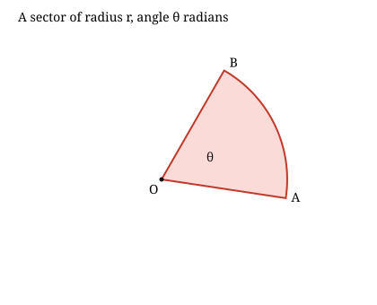

<script>if(location.hostname.endsWith('onrender.com'))location.replace('https://math-sandbox.github.io'+location.pathname+location.search+location.hash)</script>
<section class="theory" data-section="P1-4-review">
<h2>End-of-chapter review exercise 4</h2>
<p class="src">Based on Cambridge International AS &amp; A Level Mathematics: Pure Mathematics 1 Coursebook (Sue Pemberton), Chapter 4 Circular measure, end-of-chapter review exercise 4, printed pp.112–115 (PDF pages 124–127). This is a mixed review of the live sections P1-4.1 (radians), P1-4.2 (arc length) and P1-4.3 (area of a sector). Own wording and new numbers in the recap and quick checks. Official past papers are identified as such.</p>
<p class="key-words"><strong>Key words:</strong> <em>radian</em>, <em>arc length</em>, <em>sector</em>, <em>area of a sector</em>, <em>segment</em></p>
<h3>What this review covers</h3>
<p>Angles in this chapter are in <strong>radians</strong> unless a degree sign is shown. One radian is the angle at the centre subtended by an <strong>arc</strong> equal in length to the radius, and \(2\pi\) radians \(=360^\circ\).</p>
<p>The two formulae used throughout are:</p>
$$\text{arc length }s=r\theta$$
$$\text{area of a sector }=\frac12 r^2\theta$$
<p>In both formulae \(\theta\) must be in radians. A <strong>sector</strong> is the region bounded by two radii and the arc between them; its perimeter is \(2r+r\theta\).</p>
<p>A <strong>segment</strong> is the region bounded by a chord and the arc joining its ends. The area of a minor segment is the area of the sector minus the area of the triangular portion:</p>
$$\frac12 r^2\theta-\frac12 r^2\sin\theta$$
<p>The length of a chord subtending an angle \(\theta\) radians at the centre may be found from \(2r\sin(\theta/2)\), or from the cosine rule.</p>
<figure><figcaption>A sector of radius \(r\) and angle \(\theta\) radians.</figcaption></figure>
<div class="worked-example">
<h4>Worked example 1: Arc length and area of a sector</h4>
<p class="src">Recap of Key points 4.5 and 4.6 (P1-4.2 and P1-4.3). New numbers \(r=5\), \(\theta=2\).</p>
<p>A circle has radius \(5\) and a sector has angle \(2\) radians. Find the arc length of the sector and the area of the sector.</p>
<ol class="steps">
<li>Arc length: \(s=r\theta=5\times 2=10\) <span class="mark">A1</span></li>
<li>Area of the sector: \(\dfrac12 r^2\theta=\dfrac12\times 25\times 2=25\) <span class="mark">A1</span></li>
</ol>
<p class="final"><strong>Answer:</strong> arc length \(10\); area \(25\)</p>
</div>
<div class="worked-example">
<h4>Worked example 2: Perimeter of a sector</h4>
<p class="src">Recap of the sector perimeter \(2r+r\theta\) from P1-4.2. New numbers \(r=6\), \(\theta=1\).</p>
<p>A sector has radius \(6\) and angle \(1\) radian. Find the perimeter of the sector.</p>
<ol class="steps">
<li>Perimeter \(=2r+r\theta=6(2+1)=18\) <span class="mark">A1</span></li>
</ol>
<p class="final"><strong>Answer:</strong> \(18\)</p>
</div>
<h3>Common mistakes</h3>
<ul>
<li>Using \(\theta\) in degrees in \(s=r\theta\) or \(\frac12 r^2\theta\) without converting to radians.</li>
<li>For a plate or shaded region, adding the minor arc when the remaining boundary is the major arc (or the other way around).</li>
<li>Finding a chord length or a segment area but forgetting to state the required perimeter or remaining area.</li>
</ul>
<h3>Quick checks</h3>
<div class="quick-check">
<h4>Quick check 1</h4>
<p>A circle has radius \(5\). Find the arc length that subtends an angle of \(2\) radians at the centre.</p>
<details><summary>Worked solution</summary>
<ol class="steps">
<li>\(s=5\times 2=10\) <span class="mark">A1</span></li>
</ol>
<p class="final"><strong>Answer:</strong> \(10\)</p>
</details>
</div>
<div class="quick-check">
<h4>Quick check 2</h4>
<p>A circle has radius \(5\). Find the area of a sector with angle \(2\) radians.</p>
<details><summary>Worked solution</summary>
<ol class="steps">
<li>\(\dfrac12\times 5^2\times 2=25\) <span class="mark">A1</span></li>
</ol>
<p class="final"><strong>Answer:</strong> \(25\)</p>
</details>
</div>
<div class="quick-check">
<h4>Quick check 3</h4>
<p>A sector has radius \(6\) and angle \(1\) radian. Find the perimeter of the sector.</p>
<details><summary>Worked solution</summary>
<ol class="steps">
<li>\(6(2+1)=18\) <span class="mark">A1</span></li>
</ol>
<p class="final"><strong>Answer:</strong> \(18\)</p>
</details>
</div>
<p class="marks-key"><strong>Marks:</strong> M = method, A = accurate answer (depends on M), B = independent mark. Leave exact values exact; official papers state the required degree of accuracy in the question.</p>
</section>
